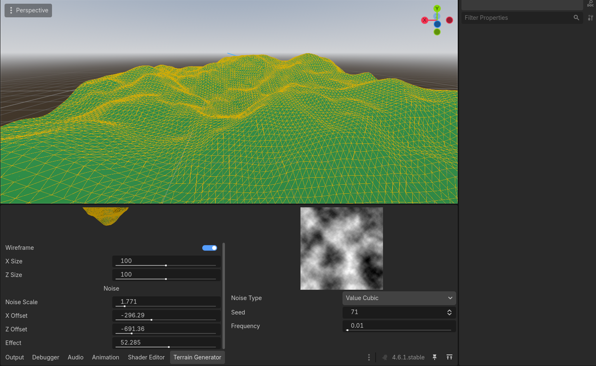

Terrain Generator
 1
1
 1 Month
1 Month
 Godot Engine
Godot Engine
Starting Experience
I had tackled terrain generation in Unity before and while GDScript and Godot are familiar to me, making tools was a first time experience.
Terrain

The plane generation script was translated from C# in Unity to GDScript for Godot. This involved rewriting many parts of my script but the mathematics stayed mostly the same, except for having to swap the axes.
The elevation (y axis) of the plane is decided using generated noise. Godot does most of this work for me, I originally planned to script my own noise generation math, but unfortunately ran out of time.
Tool
The tool is set up as a Godot plugin. It has a UI panel that is defaulted to the bottom dock, with slidable and scrollable parts. Godot by default already allows it to be moved around and separated into a different window.
The preview I made for the mesh and noise, simply copy the same values from the selected terrain to display the correct information. All the terrains generation variables are able to be changed through the tool panel and only regenerates itself when a value is changed. Noise like before is something I wanted to do more for, but I implemented enough options to be used for terrain generation.
I ran out of time to have a save mesh or noise option, but along with generating collision, this could be done with the default Godot features.
Learned Experience
I learnt a lot about mesh generation in Godot Engine, but I have a lot more to get right with it, mostly lighting and normals. When it came to creating tools for the engine, I gained plenty of confidence in the task. I'll definitely try my hand at creating more tools in the future, ones that will make my work flow more efficient.